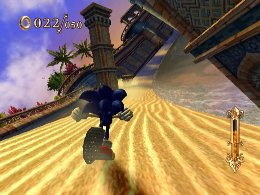
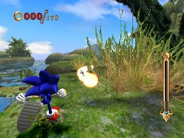
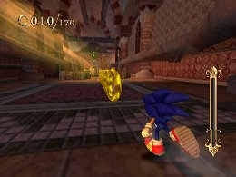
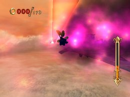
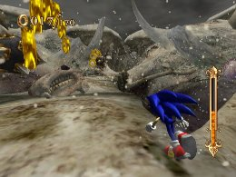
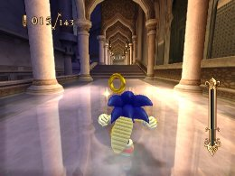

Strategies for the long courses you play first in each world
Advanced Strategies
When you enter a new world, the first missions you play are all long courses, and are the most strategy-heavy. The information below summarizes tips and effective skills.
Sand Oasis: Find King Shahryar

1. Since this is the first full stage you will play, it’s designed so you can try out the various things you learned in the tutorial (Lost Prologue).
2. This is a good chance to try out new skills, or try different combinations of skills.
――――――――――――――――――――――――――――――――――――――――
Dinosaur Jungle: Follow the Pterosaur

1. The stage is a dense jungle, and it’s designed to make you blaze your own trail. Deciding which way to go and finding the right timing to avoid dangers is more difficult here.
2. With your vision blocked by huge plants and trees, it’s easy to miss signs of danger and fall from a cliff, or run right past something you need to progress through the game.
3. Because of this, it may be better to give priority to support-type skills to reduce risks rather than speed-type skills.
[Effective skills]
Ring Bonus / Power Restart / Ring Saver: to help you recover after taking damage
Back Step / Fire Step: for when you overshoot something important
――――――――――――――――――――――――――――――――――――――――
Evil Foundry: Head for the Center

1. The stage is set inside a castle, so the paths are narrower, and you must fight enemies and avoid danger within a more limited space. This will require more precise, technical controls.
2. There are more dangers that require you to stop and gauge the correct timing, such as rotating fans, mechanical presses and bombs.
3. There are many places to grind throughout the stage, and you can take advantage of these to make your way through the stage smoothly. But there are many areas in which you will need to use grind tricks well—otherwise, you may end up taking damage or having to take a longer route. If you have a Quick Air-type skill equipped, it will get in the way of grind tricks, so make sure to remove it.
[Effective skills]
Quick Grind-type skills: to take advantage of the frequent grinding
Charge Jump: to maintain a stopped state while charging in front of gimmicks
Full Brake: to come to quick stops to avoid danger
――――――――――――――――――――――――――――――――――――――――
Levitated Ruin: Find Sinbad

1. The stage is set in ruins floating in the sky. There is little time to relax, as there is a strong wind that blows from ahead, and missiles that can suddenly attack from behind.
2. The wind can be extremely difficult to deal with. It makes a big difference in gameplay, as it can push Sonic backwards, and blow large objects at him that do damage if they hit.
3. The missiles have some homing capabilities, and appear from different places depending on Sonic’s position. They can be easy to avoid in some situations, and very difficult to evade in others.
4. Speed Break and Time Break are useful in dealing with the wind and missiles. Either one can be used to help against both threats, but Speed Break is generally more effective against the wind, and Time Break is more effective against missiles.
When the wind blows, there are often athletic gimmicks or multiple enemies nearby, and Speed Break allows you to destroy them as you blast through. You can use Speed Break against missiles as well, but because of the slight delay in activation you run the risk of being hit by a missile if it homes in on you while you activate the Speed Break. Time Break, on the other hand, activates instantly, and is better suited to helping you deal with missiles.
[Effective skills]
Speed Break / Time Break: to evade the wind and missile threats
Jump Cancel / Short Jump: to recover slightly faster from the wind
Landing Dash / Cancel Dash-type skills: to recover more easily from the wind
H-Expand-type skills: lets you do Homing Attacks more easily even if the wind pushes you back
Pearl Collector-type skills: so you can use Speed Break and Time Break more often
――――――――――――――――――――――――――――――――――――――――
Pirate Storm: Follow the Pirates

1. The stage is set on the stormy seas and on pirate ships. Sonic must make his way forward using barrels and boxes floating on the water in this action-oriented stage.
2. The waters are rough, so the footholds appear and disappear beneath the waves. Unlike the earlier land-based stages, the path is unstable, making things that much more tricky.
3. Many dangers stand in your way, such as spinning iron balls and moving blades. The timing to avoid these is now more difficult as well.
4. With the instability throughout the stage and the increased chance of making mistakes, it seems better to prioritize support-type skills rather than speed-type skills.
[Effective skills]
Time Break: to help with precise controls in areas such as landing on small footholds
Charge Jump: to maintain a stopped state while charging in front of gimmicks
H-Expand-type skills / Full Brake: to help you with actions
Pearl Collector-type skills: so you can use Time Break more often
――――――――――――――――――――――――――――――――――――――――
Skeleton Dome: Find King Solomon

1. The stage is all about skeletons, from the skeleton-type enemies to the bony objects throughout the stage that you can destroy with Homing Attacks.
2. The bony objects are not there just for decoration—they can block paths, or be used as shortcuts.
3. There are more enemies than in previous stages, and combined with the bony objects, you’ll be swinging the Wii Remote a lot to do Homing Attacks. Don’t get tired out!
4. In addition to the normal route there are hidden routes that offer dramatic shortcuts, adding some more strategic elements to the stage.
5. The large number of enemies and bony objects will increase the frequency of Homing Attacks, so skills that upgrade Homing Attacks will come in handy. You can also use Speed Breaks to help you on your way.
[Effective skills]
Speed Break: to destroy large numbers of enemies and bony objects
H-Expand, Homing Stability-type skills: to upgrade Homing Attacks
Pearl Collector-type skills: so you can use Speed Break more often
――――――――――――――――――――――――――――――――――――――――
Night Palace: Sneak into the Palace

1. The stage is set inside and outside the palace, with a variety of routes and gimmicks—outer walls with crumbling footholds, flying carpets, teleporters and hourglasses.
2. The controls for the flying carpets are a little different, and may take some getting used to. The various gameplay gimmicks get a little more difficult as well, with the road suddenly shattering right in front of you, or spears suddenly flying right at you. The difficulty level is higher overall.
3. Even things you’ve seen before are arranged differently, such as enemies piled on top of each other like a totem pole.
4. To help you deal with sudden threats or challenges that require you to slow down and get the timing right, it is probably better to prioritize support-type skills rather than speed-type skills. Using Speed Break and Time Break at the right places should also help you get through the stage.
[Effective skills]
Speed Break / Time Break: to avoid or blast through gimmicks
H-Expand-type skills / Full Break: to help enhance your action gameplay
Pearl Collector-type skills: so you can use Speed Break and Time Break more often
« Things to watch out for when using Speed Break and Time Break | Advanced Strategies | Mission Conditions and Effective Skills »
 RSS
RSS